3330C37 pipe from brake fluid reservoir to master cylinder (pump) - r r for rhd versions
- Path
- Procedures > 33 BRAKING SYSTEM > 3330 HYDRAULIC BRAKING SYSTEM > 3330C brake pump, reservoir and load proportioning valve > 3330C37 pipe from brake fluid reservoir to master cylinder (pump) - r r for rhd versions
- Kind
- repair procedure (removal / refitting; the operation number is the code)
- Applies to
- engines: 2.5 V6, 2.4 JTD 10v; all production periods
- Interactive page
- https://sloeber94.github.io/elrnDB-a156/en/#/3238085
Applies to: engines: 2.5 V6; all production periods; only with equipment: Right hand drive
 Removing
Removing
 Refitting
RefittingDrain the brake-clutch fluid from the reservoir using a suitable syringe.
1008C10 power unit upper reaction link r r
1. Disconnect the fuel vapour recirculation pipe and remove.
2. Unscrew retaining bolts (2a) and remove electrical connection protective cover (2b).
3. Undo the bolts (3a) and move aside the mounting bracket for the electrical connections.
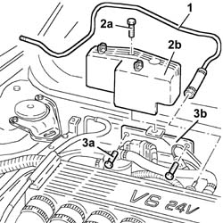
Applies to: engines: 2.5 V6; all production periods; only with equipment: Right hand drive
1. Undo button (1a) and move aside engine bulkhead panel (1b).
2. Open collar (2a) and move panel (1b) away from the engine bulkhead.
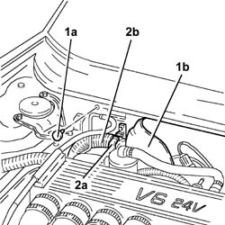
Applies to: engines: 2.5 V6; all production periods; only with equipment: Right hand drive
1. Disconnect the hoses from the brake fluid reservoir to the master cylinder, master cylinder side.
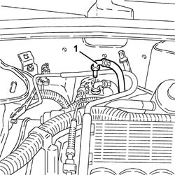
Applies to: engines: 2.5 V6; all production periods; only with equipment: Right hand drive
1. Undo the bolts (1a) and remove the brake-clutch fluid reservoir (1b).
2. Undo the bolts (2a) and remove the power steering fluid reservoir (2b).
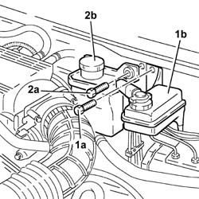
Applies to: engines: 2.5 V6; all production periods; only with equipment: Right hand drive
1. Disconnect the hose between the brake fluid reservoir and the master cylinder on the reservoir side and remove it after releasing from the collar.
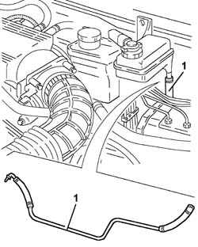
Applies to: engines: 2.5 V6; all production periods; only with equipment: Right hand drive
Refitting
RemovingReplace the hose from brake reservoir to master cylinder and secure to the collars.
Connect the hose from brake reservoir to master cylinder on the reservoir side.
Refit in its seating the power steering fluid reservoir and secure it with its bolts.
Replace the clutch fluid reservoir and bolt in place.
Connect the hoses from brake fluid reservoir to the master cylinder, master cylinder side.
Replace the electrical wiring in its seat and secure with a collar.
Replace the panel on the engine bulkhead and do up the stud.
Refit the electrical connections mounting bracket and fix it using the bolts.
Fit the electrical connection protective cover and fix it using the bolt.
Place the fuel vapour recirculation pipe back in its housing and connect.
Applies to: engines: 2.4 JTD 10v; all production periods; only with equipment: Right hand drive
Removing
Refitting1. Undo the bolts (1a) and remove the sound insulation cover (1b).
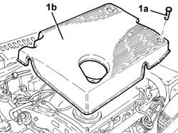
Applies to: engines: 2.4 JTD 10v; all production periods; only with equipment: Right hand drive
Drain the brake-clutch fluid from the reservoir using a suitable syringe.
1. Undo the nuts (1a) and move the plug preheating control unit and E.G.R. modulator valve mounting bracket (1b) forwards.
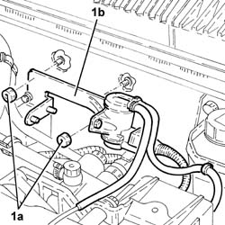
Applies to: engines: 2.4 JTD 10v; all production periods; only with equipment: Right hand drive
1. Undo the bolts (1a) and remove the power assisted steering fluid reservoir (1b).
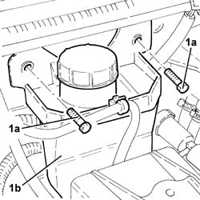
Applies to: engines: 2.4 JTD 10v; all production periods; only with equipment: Right hand drive
1. Disconnect the hoses from the brake fluid reservoir to the master cylinder, master cylinder side.
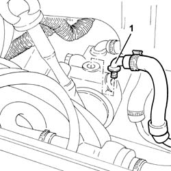
Applies to: engines: 2.4 JTD 10v; all production periods; only with equipment: Right hand drive
1. Undo bolts (1a) then move brake fluid reservoir (1b) so that the hose from brake fluid reservoir to the master cylinder can be disconnected.
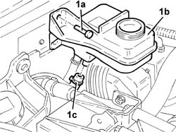
Applies to: engines: 2.4 JTD 10v; all production periods; only with equipment: Right hand drive
1. Remove the hose from brake fluid reservoir to master cylinder after disengaging it from the retaining bands.
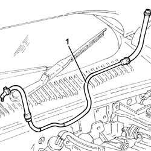
Applies to: engines: 2.4 JTD 10v; all production periods; only with equipment: Right hand drive
Refitting
RemovingPlace the hose from the brake fluid reservoir to the master cylinder back in its housing and secure with the relevant bands.
Connect the hose between brake fluid reservoir and master cylinder to the liquid fuel reservoir.
Place the brake fluid reservoir into its housing and secure using the retaining bands.
Connect the pipe from brake fluid reservoir to master cylinder, master cylinder side.
Refit in its seating the power steering fluid reservoir and secure it with its bolts.
Place the the plug preheating control unit and E.G.R. modulator valve mounting bracket back in its housing and secure with the relevant nuts.
Place the soundproof cover back in its housing and secure using the relevant bolts.